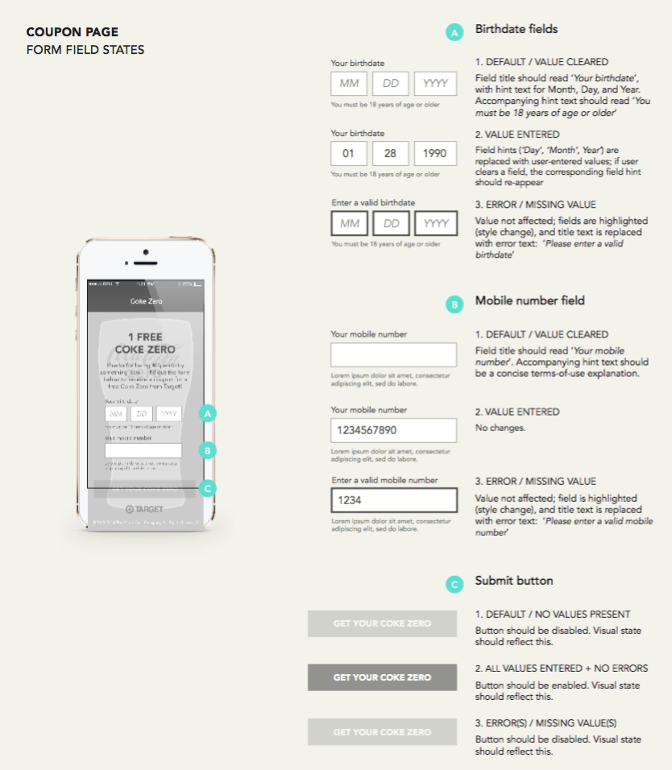
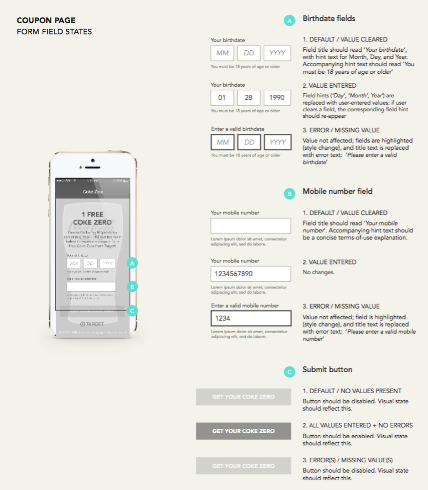

Results
Users loved the campaign, as it was the most “Shazamed” advertisement in the company’s history. The Coke Zero coupons were redeemed at a rate of 25%, which exceeded expectations. At the 2015 Cannes Lions festival, the campaign won a Bronze medal.
Sample of documents produced including user flows and wireframes
 
